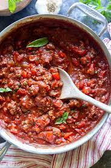

pasta-sauce-with-italian-sausage
Pasta Sauce with Italian Sausage

Description
Ingredients
- 1 pound of Italian sausage links
- 1/2 ponund of lean ground beef
- 1 tablespoon olive oil
- 1 chooped onion
- 1 chopped garlic
- 16 ounce of canned tomatoes
- 15 ounce of canned tomato sauce
- 1 teaspoon of salt
- 1/4 teaspoon ground black pepper
- 1 teaspoon dried basil
- 1 teaspoon dried oregano
- 1 bay leaf
Steps
-
Removed casing from sausage links and cut into 1/2 inch slices.Cook
sausage over medium heat until golden brown. Remove and set aside
-
heat the ground beef, olive oil, garlic, and onion over medium heat
until the meat is nicely browned and drain the juice
-
Pour in tomato sauce; mix in salt, ground black pepper, basil, oregano,
bayleaf, and cooked sausage. Simmer uncovered for 1 hour, stirring
occasionally.
Credit
Check out the original recipe